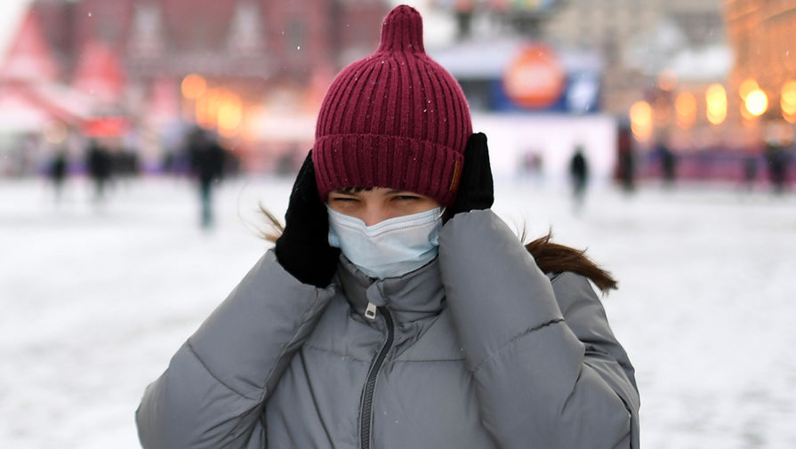
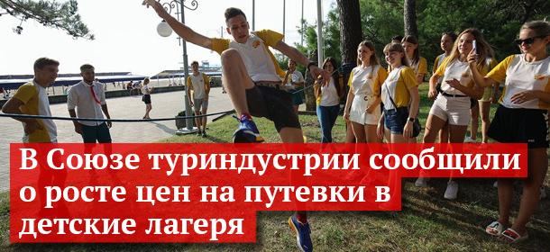

ВОЗ: носить маски и соблюдать дистанцию придется и после отмены мер по COVID-19

Представитель Всемирной организации здравоохранения в России Мелита Вуйнович заявила, что масочный режим и социальную дистанцию придется соблюдать и после снятия жестких ограничительных мер.
«Надо быть очень осторожными.Очень важно, чтобы мы сейчас могли снизить число зараженных практически до нуля или до очень низкого уровня», — сказала она в эфире телеканала «Россия 24».
Вуйнович отметила, что даже при значительном снижении уровня заболеваемости коронавирусом не стоит расслабляться, поэтому соблюдение масочного режима и социальной дистанции продолжится.
В России коронавирус подтвержден у 3 901 204 человек, за последние сутки было выявлено 16 474 случая заражения.
Ранее иммунолог назвал срок отмены масочного режима в России.
Posted On: 2021-02-02T21:00:00
Posted By: Катерина Медведева

Content Date: 2021-02-02
Download Date: 2021-04-21
Document ID: L0C04ANHY